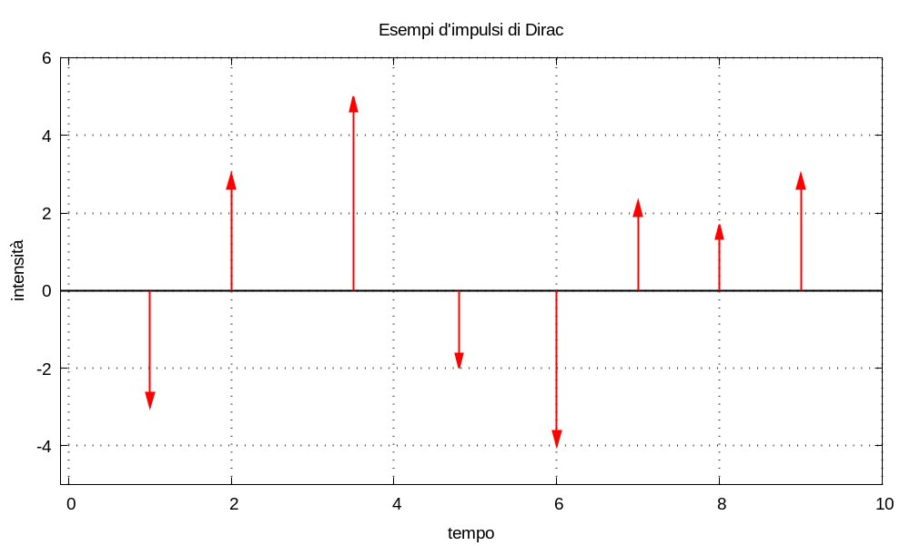
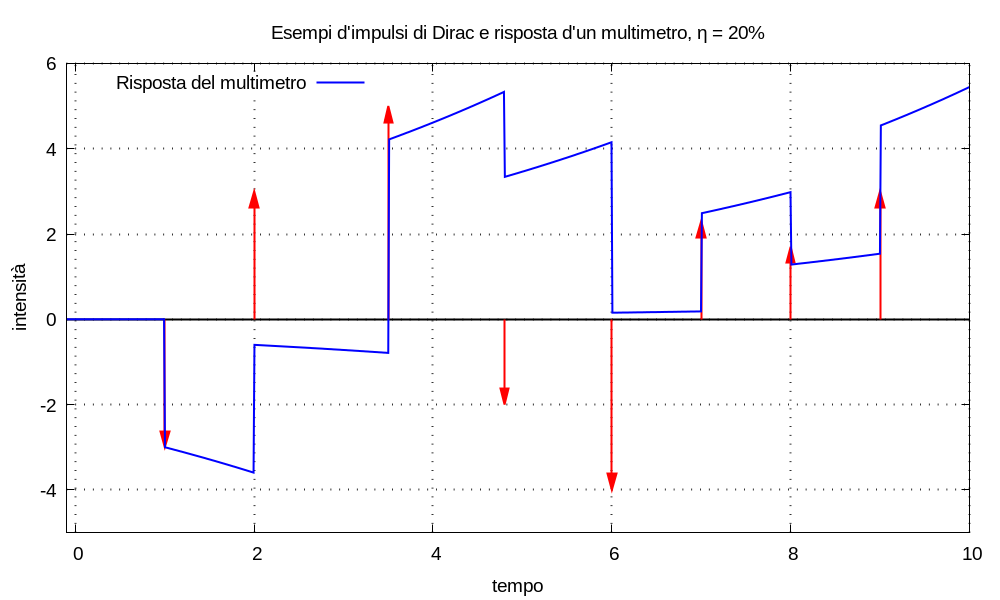

Il modello matematico del multimetro finanziario necessita degl’impulsi di Dirac per rappresentare i movimenti di denaro; quest’impulsi sono enti matematici sofisticati, però non occorre comprenderne veramente la definizione per utilizzarli in questa teoria.
È possibile costruire un modello pratico dell’utilizzo degl’impulsi di Dirac senza conoscerne la matematica sottostante? Sono scettico, ma chi può escluderlo definitivamente?
La rappresentazione tradizionale degl’impulsi (che finora non ho mostrato, a torto o a ragione) è con delle frecce, come nella figura seguente.

L’altezza delle frecce è proporzionale all’entità dell’impulso:
L’uso delle frecce è la rappresentazione grafica d’un evento istantaneo, d’una “spinta” istantanea: subito prima della freccia succede niente; subito dopo la freccia succede niente; solo nell’istante in cui c’è la freccia succede qualcosa.
La notazione matematica δ(t - t0), che indica l’impulso di Dirac, significa che: qualcosa d’istantaneo succede all’istante t0; niente succede negl’altri istanti. La somma tra impulsi:
δ(t - t0) + δ(t - t1)
significa che: qualcosa d’istantaneo succede negl’istanti t0 e t1; niente succede negl’altri istanti. La combinazione lineare tra impulsi:
C0 δ(t - t0) + C1 δ(t - t1)
significa che: qualcosa d’istantaneo succede nell’istante t0, con intensità C0; qualcosa d’istantaneo succede nell’istante t1, con intensità C1; niente succede negl’altri istanti.
Esempio (della sberla) Secondo una diceria pseudo–intelligente, non confermata nella realtà storica: Filippo Argenti diede una sberla a Dante Alighieri: l’impatto mano–faccia è un evento breve avente una certa intensità, è un “impulso”. La sberla non è un evento istantaneo, ma esistono situazioni in cui lo si può trattare come tale senza commettere errori significativi.
Il dolore che Dante prova a causa della sberla passa, in un tempo brevissimo, da zero, prima della sberla, a cinque, dopo la sberla, in una scala del dolore da uno a dieci; poi diminuisce progressivamente fino a zero.
Ammessa l’esistenza d’un sistema di rilevamento del dolore nella faccia: la sberla è un ingresso a tale sistema; il dolore è la risposta del sistema stesso.
Esempio (della corda di chitarra) Un plettro percuote una corda di chitarra: l’impatto plettro–corda è un evento breve avente una certa intensità, è un “impulso”. L’impatto non è un evento istantaneo, ma esistono situazioni in cui lo si può trattare come tale senza commettere errori significativi.
Il suono che la corda produce vibrando passa, in un tempo brevissimo, da zero, prima dell’impatto, a un certo livello d’intensità, dopo l’impatto; poi diminuisce progressivamente fino a zero.
Ammesso che la chitarra sia un sistema che può produrre suoni: l’impatto è un ingresso a tale sistema; il suono è la risposta del sistema stesso.
Esempio (dello Hokuto Shinken) Quando un praticante del kenpo Hokuto Shinken usa la tecnica del pugno martellante: «AAH TAH! TAH! TAH! TAH! TAH! TAH! TAH! TAH! TAH! TAH! TAH! TAH! TAH! … UAH TAH!»; la vittima è interessata da una gragnuola di colpi. Se il numero di colpi è K, possiamo rappresentare la tecnica con una sommatoria d’impulsi:
Σk=1→K Ck δ(t - tk)nessuno dei pugni è istantaneo, ma non si commette grande errore nel considerarli come tali.
Immaginiamo che gl’impulsi della figura precedente siano versamenti e prelievi s’un multimetro finanziario con remunerazione pari a λ = log1p(20%); allora la risposta del sistema è quella nella figura seguente; a ogni impulso corrisponde una discontinuità nella risposta.
